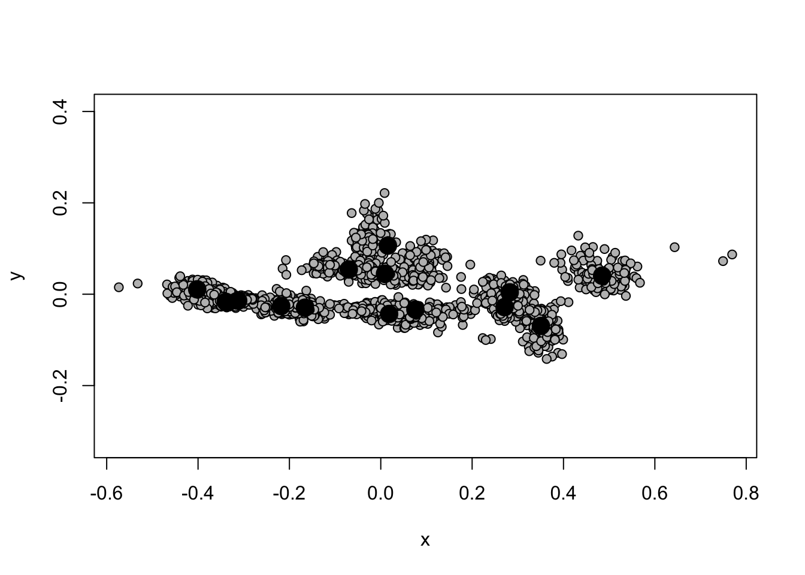
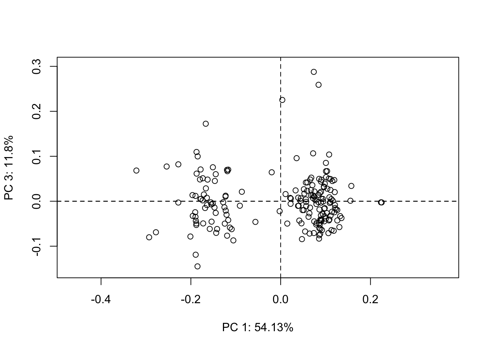
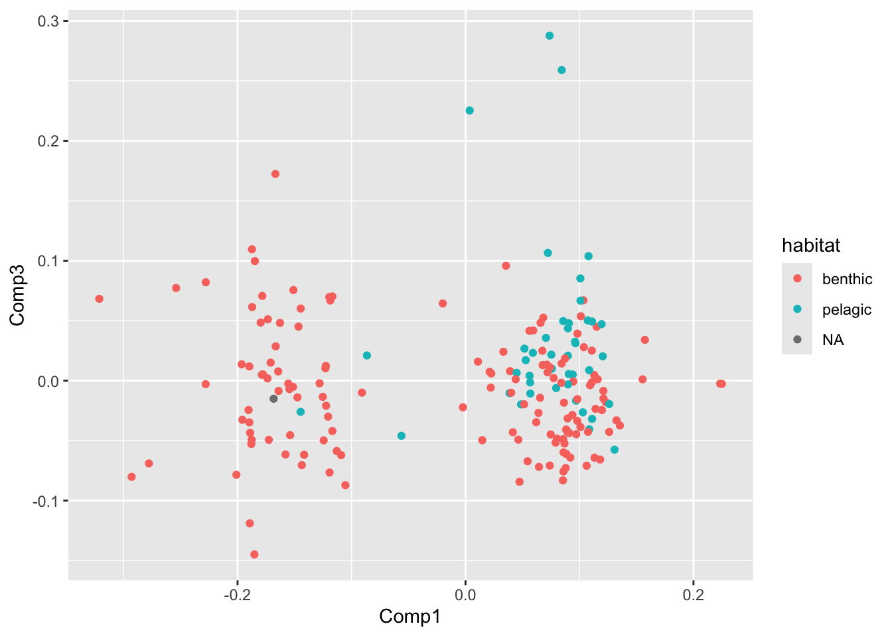
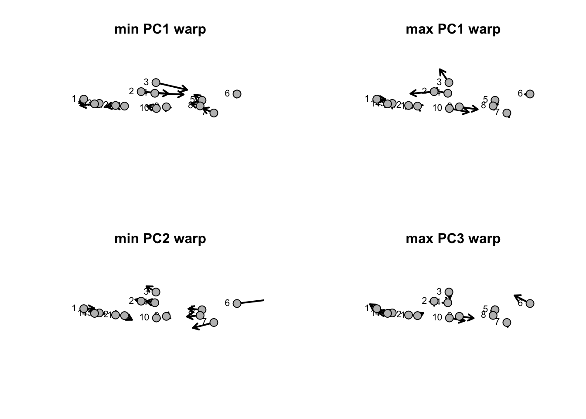
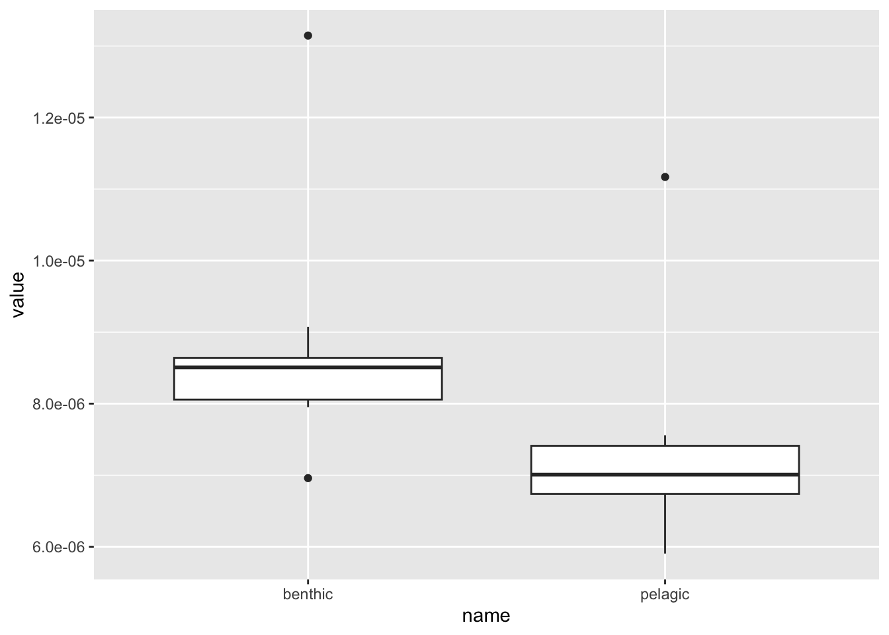

Module 5 Project
Introduction
Sharks are an ancient group of cartilaginous fishes in the class Chondrichthyes, subclass Elasmobranchii, and subdivision Selachimorpha. The selachians include over 500 species that are further placed in in two superorders: Squalomorphii and Galeomorphii. Modern sharks originated nearly 200 million years ago (Grogan, Lund, and Greenfest-Allen (2012)) and, since then, have diversified into nearly every major marine ecosystem. This evolutionary success has been attributed to the diversity of their locomotor modes and associated body shape (Lauder and Di Santo (2015),Thomson and Simanek (1977)). A modest body of work devoted to the ecomorphology of sharks has focused largely on caudal find shape as it relates to ecology and locomotor modes Wilga and Lauder (2004). Sharks have a heterocercal tails in which the caudal part of notochord flexes dorsally and supports a large dorsal lobe of the fin, while, with more than a few exceptions, the ventral lobe is small.

In there seminal work on shark ecomorphology, Thomson and Simanek (1977) put forth that there were four shark morphotypes:
- A group characterized by having a deep body, large pectoral fins, a symmetrical caudal fin with a narrow peduncle (ie., base to the fin) and high-aspect ratio. A white shark represents this group.
- A group characterized by a body less deep then Group 1 and a cadual fin that is swept (ie., large heterocercal angle–the angle between the upper and lower lobes of the fin). This group includes most carcharhinid sharks such as the bull shark.
- A group with a large head, blunt snout, a body that has anteriorly placed pectoral fins and posteriorly placed dorsal and pelvic, and a caudal fin with a low heterocercal angle and small ventral lobe. Catsharks (family Scyliorhinidae) and dogfish (order Squaliformes) represent this group.
- A group characterized by a caudal fin with a higher aspect angle similar to that of Group 2 but lacking an anal fin, e.g. the dalatiids.
 A white shark, Carcharias carchardon, typical of Group 1. |
|
 A bull shark, Carcharhinus leucas, typical of Group 2. |
 A dogfish of the genus Squalus typical of Group 3. |
|
 A kitefin shark, Dalatias licha, typical of Group 4. |
Sternes and Shimada (2020) used geometric morphometrics and a multivariate analysis to evaluate the groups proposed by Thomson and Simanek (1977) and found that sharks fell into one of two morphotypes (A and B). Their Group A was characterized by an elongate body, posteriorly placed dorsal fin, and a swept caudal while Group B was characterized by a deeper body, anteriorly place dorsal fins, and a less swept caudal fin. Thomson and Simanek (1977) suggested that the shape of species in these two broad ecomorphs evolved due to differences in ecological niche and locomotor behavior. Specifically, they posited that the species of elongate Group A are typically benthic and swim like eels whereas the deeper bodied species of Group B are often pelagic and swim like salmon or tunas.

Although the work of Thomson and Simanek (1977) and later Sternes and Shimada (2020) points to interesting patterns in shark body-shape, neither study explicitly studied the role habitat—that is, pelagic or benthic—had in influencing the evolution body-shape evolution. In particular, Sternes and Shimada (2020) merely observed that their two groups with different body shapes often varied in their habitat preference. In addition, Sternes and Shimada (2020) made no explicit, quantitative phylogenetic test of their patterns. This leaves open an important question: Do pelagic and benthic sharks have significantly different body shape? Subsequently, we might also ask, Has the morphology of pelagic and benthic sharks evolved at the same rate? These are the questions we will take on in this project.
These questions represent two an important thrust of evolutionary research: what macroevolutionary events have contributed to diversity, whether in species or phenotype. To answer questions like these requires that we essentially recapitulate the Sternes and Shimada (2020) body-shape data set using landmark-based geometric morphometrics. This is a relatively straightforward, if tedious, method of capturing shape variation in a group of interest. For this, you’ll digitize 14 homologous landmarks on images of some 220 species of sharks. Using the best practices in the field of geometric morphometrics to align our landlandmarks and extract shape information, we’ll assess morphological disparity in a phylogenetic framework and assess the difference in rates of morphological evolution between the groups between pelagic and benthic sharks.
Methods
Image acquisition
A few decades ago, a morphometric project like this would require visiting museums collections from around the world to take images of the specimens and species of interest. In fact, this was a major part of Prof. Kenaley’s PhD thesis, which included trips to natural history collections in France, Denmark, Great Britain, Taiwan, Japan, Monaco, New Zealand, and Australia. Ahhhhhh, the good ol’ days. Fortunately (or unfortunately), travel to such wonderful places may be avoided several resources exist that contain a trove of images of fish-like vertebrates.
We’ll make use of shark images in the FishBase catalog: a clearing house
of all things fish that has amassed tons of data from the scientific
literature. Prof. Kenaley used the rfishbase package to rip
images of scientific drawings of sharks. This resulted in a cache of
images for the ~220 species included in a recent phylogeny of the
elasmobranchs (Stein et al. (2018)).
Species list, phylogeny, and ecology
The 200+ species we’ll analyze in the study were chosen because they had decent images on FishBase and cover the nooks and crannies of the Stein et al. (2018) phylogeny, giving a broad sample of the group. As we move on, we’ll use this table to keep track of images we need to landmark, the species the images belongs to, and the habitat for each.The habitat data for our study come from Compagno (1984) and Compagno (2001). Let’s load these data now so we have it handy.
library(tidyverse)
shark_dat <- read_csv("shark_data.csv")## Rows: 188 Columns: 8
## ── Column specification ──────────────────────────────
## Delimiter: ","
## chr (5): sp, file_name, depth, habitat, ref
## dbl (3): id, size, depth_max
##
## ℹ Use `spec()` to retrieve the full column specification for this data.
## ℹ Specify the column types or set `show_col_types = FALSE` to quiet this message.Because we’ll be comparing body shape in sharks, this project is by definition a comparative one and we’ll need a phylogeny for the group. Fortunately a relatviely recent phylogenomic analysis of over 500 species of elasmobranchs (sharks + batoids) has been published by Stein et al. (2018). Unfortunately, there is some phylogenetic discordance in this study. Specifically, when researchers analyze phylogenetic relationships, they typically repeat their analysis in a process known as bootstrapping. In phylogenetics, bootstrapping is conducted using the columns of the character matrix. Each pseudoreplicate contains the same number of species (rows) and characters (columns) randomly sampled from the original matrix, with replacement. A phylogeny is reconstructed from each pseudoreplicate, with the same methods used to reconstruct the phylogeny from the original data. This often results in a data set of trees that have conflicting relationships—that is, phylogenetic uncertainty—and this was the case for the Stein et al. (2018) study. We’ll have to account for this in our analysis. But, more on that later . . .
In any case, we’ve used the taxa studied in this paper to find images in FishBase and we’ll use a tree file representing phylogeny for our comparative analysis.

Geometric morphometrics
As we learned in class and what you’ve been reading, researchers interested in comparing shape change between species often use landmark-based geometric morphometrics. A geometric morphometric study such as ours generally follow these steps:
- Data collection: select landmarks of interest, usually through digitization of specimen images.
- Data standardization: Make landmarks comparable across all specimens, usually through superimposition.
- Analysis: choose a statistical approach appropriate to the questions.
- Interpretation: use the outcome of the statistical analysis to assess the original questions.
Digitization and landmarking
Our shape analysis will be based on 14 landmarks placed on images of shark bodies of our ~220 species. To landmarks on the body, we’ll follow this generalize workflow below in the image analysis program FIJI (FIJI is just imageJ).
You and your team/group should will be assigned about 20 of the ~200 species to outline. Images of these species can be accessed through this directory.
First gather your images to work on and follow the steps below for each. In FIJI:
Open am image.
Select the multipoint tool.
Digitize the 14 landmarks you see above.
Measure the XY positions of these points (
cmd/ctrl+m).Select the macro tab and run the macro (
cmd/ctrl+r).Save the results to the appropriate directory.
Close the results and image tab (don’t save the image).
Note: For the first image you outline, you will have to open the macro editor (“Plugins” \(\rightarrow\) “New” \(\Macro\)). Paste the script command from below into the editor and save this new macro to an appropriate directory, perhaps your cloned repo. You’ll want to access this later (“Plugins” \(\rightarrow\) “Edit”) so that you can automate the process of saving text files with the correct fielname.
f = getTitle();
dir=getDirectory("Choose where to save data ");
selectWindow("Results");
saveAs("Results", dir+f+"_.csv");This script saves the results as a tab-separated text file with same filname as the image file name and appends “_.csv”. This is super important!! and how we’ll link the landmarks to a species.
After your team has completed landmarking the assigned species, upload your text files to this directory. Once all the data appear here, Prof. Kenaley will evaluate the quality of the landmarks and do some post-processing if required (i.e., file-name checks, quality, etc.). You can then download these evaluated data for shape analysis.
Superimposition
After digitizing landmarks, we must remove the distracting variations of size, orientation, and position that can vary between specimens and thus add noisey variables in analysis of shape. This can be mitigated by using a superimposition method. Generalized procrustes analysis (GPA) is the superimposition method of choice nowadays. GPA removes the variation of size, orientation, and position by superimposing the landmarks in a common coordinate system. The landmarks for all specimens are optimally translated, rotated, and scaled based on a least-squared estimation. The first step is translation and rotation to minimize the squared and summed differences (squared Procrustes distance) between landmarks on each specimen. Then the landmarks are individually scaled to the same units of centroid size. Centroid size is the square root of the sum of squared distances of the landmarks in configuration to their mean location. The translation, rotation, and scaling bring the landmark configurations for all specimens into a common coordinate system so that the only differing variables are based on shape alone. The new superimposed landmarks can now be analyzed in multivariate statistical analyses
To perform a Procrustes superimposition on our landmark data—along
with many other analyses—we will turn the the geomorph
package. Please install and load geomorph. But, before we
do, let’s download and read in about 90 or so landmark files that
Prof. Kenaley produced ahead of this project. You can find these example
files here. You’ll have to
download this compressed directory and unzip it to your project
directory. You’ll also have to download and install the
abind package as well.
Note: these are just examples. You will need to download the full data set evaluated by Prof. K. form this location.
To get started with superimposition, let’s load the packages
geomorph and abind. When you unzip the
shark_points.zip directory to you project directory, you
have a folder named shark_points. Our first operation will
be to list the files in that directory and then read them in, all at
once.
library(geomorph)## Loading required package: RRPP## Loading required package: rgl## Loading required package: Matrix##
## Attaching package: 'Matrix'## The following objects are masked from 'package:tidyr':
##
## expand, pack, unpacklibrary(abind)
f <- list.files("shark_points",full.names = T,pattern=".csv")
xy <- read_csv(f,id="file") %>%
dplyr::select(file,X,Y) %>%
mutate(Y=abs(Y-max(Y))) %>%
mutate(file_name=gsub("*_.csv","",basename(file))) %>%
left_join(shark_dat) ## New names:
## • `` -> `...1`## Rows: 2632 Columns: 15
## ── Column specification ──────────────────────────────
## Delimiter: ","
## dbl (14): ...1, Area, Mean, Mode, X, Y, XM, YM, Perim., Circ., Slice, AR, Ro...
##
## ℹ Use `spec()` to retrieve the full column specification for this data.
## ℹ Specify the column types or set `show_col_types = FALSE` to quiet this message.
## Joining with `by = join_by(file_name)`Here we used list.files() with
pattern=pattern=".csv" to find all the files in the
shark_points directory. We also set
full.names = T so that the full file path is saved to the
object f.
head(f)## [1] "shark_points/Acnig_u0.gif_.csv" "shark_points/Alpel_u0.gif_.csv"
## [3] "shark_points/Alsup_u0.gif_.csv" "shark_points/Alvul_u0.gif_.csv"
## [5] "shark_points/Apbru_u1.gif_.csv" "shark_points/Aplau_u0.gif_.csv"This made reading all the files and adding them to one tibble in a
single operation possible with read_csv(). Notice we added
a file column to the tibble with id="file" and
then selected only the columns file, X,
Y. This operation is saved to an object logically named
xy.
For landmarks to used in geomorph, they must be stored
as a 3-dimensional array, that is, essentially a list of similarly sized
2D matrices, where the position the \(i^{th}\) matrix is in the \(i^{th}\) index of the third dimension,
i.e., array[,,i]. To massage our large tibble into such an
array, we have to split the tibble into a bunch of lists for this, we
can simply run a for loop, breaking the data up into a list
of data frames according to species. Notice how we use
filter() to split the large tibble into into small
data.frames that will reside in ldk_l. This will leave us
with a list of data.frames as long as all our files. We then use
abind’s abind() function to bind the list of
data.frames in ldk_l into an array, with each data.frame
taking a position in the third dimension. This array is saved in the
object ldk. Lastly, we’ll specify that the names of this
third dimension should be the unique values of species in
the original tibble. Note: this is how we’ll retrieve species
information.
ldk_l <- list()
shark_sp <- xy$sp %>% unique
for(i in shark_sp){
ldk_l[[i]] <- xy %>%
filter(sp==i) %>%
dplyr::select(X,Y) %>%
data.frame
}
names(ldk_l)## [1] "Aculeola nigra" "Alopias pelagicus"
## [3] "Alopias superciliosus" "Alopias vulpinus"
## [5] "Apristurus brunneus" "Apristurus laurussonii"
## [7] "Apristurus macrorhynchus" "Apristurus manis"
## [9] "Apristurus melanoasper" "Apristurus platyrhynchus"
## [11] "Apristurus profundorum" "Apristurus sinensis"
## [13] "Atelomycterus baliensis" "Atelomycterus fasciatus"
## [15] "Atelomycterus marnkalha" "Atelomycterus marmoratus"
## [17] "Aulohalaelurus labiosus" "Brachaelurus waddi"
## [19] "Carcharhinus albimarginatus" "Carcharhinus amblyrhynchos"
## [21] "Carcharhinus brachyurus" "Carcharodon carcharias"
## [23] "Carcharhinus falciformis" "Carcharhinus leucas"
## [25] "Carcharhinus limbatus" "Carcharhinus melanopterus"
## [27] "Carcharhinus plumbeus" "Carcharhinus sorrah"
## [29] "Carcharias taurus" "Carcharhinus tilstoni"
## [31] "Centrophorus atromarginatus" "Centroscymnus coelolepis"
## [33] "Centroselachus crepidater" "Centroscyllium fabricii"
## [35] "Centrophorus granulosus" "Centroscyllium granulatum"
## [37] "Centrophorus harrissoni" "Cephaloscyllium hiscosellum"
## [39] "Centrophorus isodon" "Cephaloscyllium laticeps"
## [41] "Cetorhinus maximus" "Centroscyllium nigrum"
## [43] "Centroscymnus owstonii" "Centroscyllium ritteri"
## [45] "Cephaloscyllium silasi" "Centrophorus squamosus"
## [47] "Cephaloscyllium variegatum" "Cephaloscyllium ventriosum"
## [49] "Chlamydoselachus anguineus" "Chiloscyllium griseum"
## [51] "Chiloscyllium hasseltii" "Chiloscyllium indicum"
## [53] "Chaenogaleus macrostoma" "Chiloscyllium plagiosum"
## [55] "Chiloscyllium punctatum" "Cirrhigaleus barbifer"
## [57] "Dalatias licha" "Deania hystricosa"
## [59] "Deania profundorum" "Deania quadrispinosa"
## [61] "Echinorhinus brucus" "Echinorhinus cookei"
## [63] "Etmopterus brachyurus" "Etmopterus granulosus"
## [65] "Etmopterus molleri" "Etmopterus polli"
## [67] "Etmopterus princeps" "Etmopterus schultzi"
## [69] "Etmopterus spinax" "Etmopterus unicolor"
## [71] "Euprotomicrus bispinatus" "Eusphyra blochii"
## [73] "Eucrossorhinus dasypogon" "Furgaleus macki"
## [75] "Figaro boardmani" "Galeocerdo cuvier"
## [77] "Galeus eastmani" "Galeus melastomus"
## [79] "Galeus murinus" "Galeus polli"
## [81] "Galeus sauteri" "Pseudoginglymostoma brevicaudatum"
## [83] "Ginglymostoma cirratum" "Glyphis gangeticus"
## [85] "Glyphis glyphis" "Bythaelurus canescens"
## [87] "Bythaelurus dawsoni" "Haploblepharus edwardsii"
## [89] "Brachaelurus colcloughi" "Hemipristis elongata"
## [91] "Heterodontus francisci" "Heterodontus galeatus"
## [93] "Hexanchus griseus" "Hemitriakis japanica"
## [95] "Hemitriakis leucoperiptera" "Heterodontus mexicanus"
## [97] "Hemigaleus microstoma" "Hemigaleus australiensis"
## [99] "Hemiscyllium ocellatum" "Heptranchias perlo"
## [101] "Heterodontus portusjacksoni" "Heterodontus zebra"
## [103] "Holohalaelurus regani" "Hypogaleus hyugaensis"
## [105] "Iago garricki" "Iago omanensis"
## [107] "Isistius brasiliensis" "Isurus oxyrinchus"
## [109] "Isurus paucus" "Lamna ditropis"
## [111] "Lamna nasus" "Lamiopsis temminckii"
## [113] "Loxodon macrorhinus" "Megachasma pelagios"
## [115] "Mitsukurina owstoni" "Mustelus antarcticus"
## [117] "Mustelus asterias" "Mustelus californicus"
## [119] "Mustelus canis" "Mustelus henlei"
## [121] "Mustelus lenticulatus" "Mustelus manazo"
## [123] "Mustelus mustelus" "Mustelus punctulatus"
## [125] "Mustelus schmitti" "Nasolamia velox"
## [127] "Negaprion acutidens" "Negaprion brevirostris"
## [129] "Nebrius ferrugineus" "Notorynchus cepedianus"
## [131] "Odontaspis noronhai" "Orectolobus maculatus"
## [133] "Orectolobus ornatus" "Oxynotus bruniensis"
## [135] "Oxynotus centrina" "Oxynotus paradoxus"
## [137] "Parascyllium collare" "Paragaleus pectoralis"
## [139] "Parmaturus xaniurus" "Pliotrema warreni"
## [141] "Poroderma africanum" "Poroderma pantherinum"
## [143] "Prionace glauca" "Proscyllium habereri"
## [145] "Pristiophorus japonicus" "Pseudocarcharias kamoharai"
## [147] "Pseudotriakis microdon" "Rhizoprionodon acutus"
## [149] "Rhizoprionodon lalandii" "Rhizoprionodon longurio"
## [151] "Rhizoprionodon oligolinx" "Rhizoprionodon porosus"
## [153] "Rhizoprionodon taylori" "Rhizoprionodon terraenovae"
## [155] "Rhincodon typus" "Schroederichthys bivius"
## [157] "Scyliorhinus canicula" "Scyliorhinus capensis"
## [159] "Scoliodon laticaudus" "Zameus squamulosus"
## [161] "Scylliogaleus quecketti" "Scyliorhinus retifer"
## [163] "Scymnodon ringens" "Scyliorhinus stellaris"
## [165] "Scyliorhinus torazame" "Somniosus microcephalus"
## [167] "Somniosus pacificus" "Somniosus rostratus"
## [169] "Sphyrna corona" "Sphyrna lewini"
## [171] "Sphyrna media" "Sphyrna mokarran"
## [173] "Sphyrna tiburo" "Sphyrna tudes"
## [175] "Sphyrna zygaena" "Squalus acanthias"
## [177] "Cirrhigaleus asper" "Squatina australis"
## [179] "Squalus japonicus" "Squaliolus laticaudus"
## [181] "Squalus megalops" "Squalus mitsukurii"
## [183] "Squatina squatina" "Sutorectus tentaculatus"
## [185] "Triakis megalopterus" "Triaenodon obesus"
## [187] "Triakis scyllium" "Triakis semifasciata"ldk <- abind(ldk_l, along=3)
dimnames(ldk)[[3]] <-names(ldk_l)
ldk[,,1:3] #the first few ## , , Aculeola nigra
##
## X Y
## [1,] 39.5 423.333
## [2,] 260.0 467.333
## [3,] 292.0 472.333
## [4,] 293.5 448.833
## [5,] 464.0 436.333
## [6,] 596.0 446.333
## [7,] 522.0 386.833
## [8,] 454.5 414.333
## [9,] 380.0 410.333
## [10,] 341.0 394.333
## [11,] 209.0 406.333
## [12,] 180.0 414.333
## [13,] 100.5 406.333
## [14,] 74.5 399.833
##
## , , Alopias pelagicus
##
## X Y
## [1,] 38.0 442.833
## [2,] 162.5 467.333
## [3,] 186.5 507.333
## [4,] 192.5 470.333
## [5,] 295.5 456.333
## [6,] 606.5 514.333
## [7,] 321.5 402.333
## [8,] 300.5 427.333
## [9,] 249.5 425.333
## [10,] 228.5 421.333
## [11,] 135.5 423.333
## [12,] 103.5 420.333
## [13,] 69.0 429.000
## [14,] 59.5 428.500
##
## , , Alopias superciliosus
##
## X Y
## [1,] 38.5 435.333
## [2,] 221.5 473.833
## [3,] 257.0 519.333
## [4,] 261.5 472.833
## [5,] 364.0 456.833
## [6,] 604.5 537.333
## [7,] 389.5 403.333
## [8,] 363.0 431.333
## [9,] 310.0 424.833
## [10,] 282.5 411.833
## [11,] 168.5 414.833
## [12,] 138.5 412.333
## [13,] 82.5 418.333
## [14,] 67.5 419.833With a proper array in place as ldk, we’re now free to
move on the superimposition with the geomorph function
gpagen(). We’ll do this saving the output to
ldk_al (for landmark alignment) and plot the the 14 aligned
and superimposed landmarks for all the example specimens.
ldk_al <- gpagen(ldk)##
## Performing GPA
## | | | 0% | |================== | 25% | |=================================== | 50% | |==================================================== | 75% | |======================================================================| 100%
##
## Making projections... Finished!plot(ldk_al)
Analysis Part I: A Morphospace
In geometric morphometric analysis, researchers first turn to describing the axes of shape variation.Indeed, this is what Sternes and Shimada (2020) did to produce the figure above. This and what we’re after is often termed a morphospace, a representation of the shape the study group does and does not have.
To develop such a thing, biologist usually turn to Principal
Components Analysis (PCA) whereby a very complicated suite of variables
is distilled into a set of fewer variables that describe the important
variance among the original variables. The coordinates contained in our
ldk_al object describe dozens of variables: scaled
distances between all the landmarks. So we have many variable to
consider and this becomes, very quickly, a serious multivariate
problem. PCA is suited to multivariate analysis because it reduces
the complexity of the data, taking many variables and distilling them
into just a few. At its core, PCA produces a series of regressions, or
vectors, that pass through the values of the original variables. This
operation is performed iteratively, with the first vector (the first
principal component, PC1), drawn through the variable space that
accounts for the most variance in the data set. After the combination of
variables forming PC1 is removed, a subsequent vector (PC2) is drawn
through another unique variable space that describes the second most
amount of variance. This continues until most of the variance is
captured, resulting in scores of PCs. The first two or three, however,
are usually enough to describe a health amount of variance, say 90% or
more.
To perform PCA, we’ll use geomorphs
gm.prcomp() function like so. Plotting reveals our first
result.
pca <- gm.prcomp(ldk_al$coords)
plot(pca)Wow, now we’re getting close to the Sternes and Shimada (2020) results and answering, at least in part, one of our questions: Does habitat result in different body shapes. But let’s break down what this plot means first. By default, when we plot a PCA object, the first two PCs are plotted, PC1 on the x axis, PC2 on the y. Each point represents the PC scores for a specimen in the data set. Notice that the amount of variance explained by our PCs is given and, as expected, PC1 contains most of the variance (54%) and PC2 considerably less less (19%). If we plot again, but specify a different combination of PCs, say 1 and 3, we get a different plot, of course. Notice the variance explained by PC3 is predictably less than that of PC2.
plot(pca,1,3)
OK, so based on our PC plots, it looks as if we have two groupings, just like Sternes and Shimada (2020). But, do these groups correspond to largely pelagic vs. benthic species? It’s hard to tell. We don’t really know because we don’t know which species belong to each point in our plots, nor their habitat.
Notice, however, that the names of the coordinates in
ldk were pegged in a previous operation to the species
names.
head(dimnames(ldk)[[3]])## [1] "Aculeola nigra" "Alopias pelagicus" "Alopias superciliosus"
## [4] "Alopias vulpinus" "Apristurus brunneus" "Apristurus laurussonii"These values were maintained throughout the superimpositon step and
in the PCA operation. The coordinates plotted in the PCA plots are
contained in a matrix named x in our pca
object. Notice the row names:
pca$x %>% data.frame %>% dplyr::select(Comp1,Comp2) %>% head## Comp1 Comp2
## Aculeola nigra 0.033229330 0.06321765
## Alopias pelagicus 0.073754120 -0.15999699
## Alopias superciliosus 0.003639515 -0.04236310
## Alopias vulpinus 0.084399920 -0.18088863
## Apristurus brunneus -0.166824169 0.10883149
## Apristurus laurussonii -0.144591823 -0.04019980So, we have the species names from whence the data, both land mark and PCA, came. Fortunately, Professor Kenaley assembled a table containing of all the the species for landmarking, and the species and habitat for each. You can download this file and read in the data.
What’s left to do in exploring if benthic and pelagic sharks occupy
different morphospace is to combine this information with the PC scores
in pca$x. This can be done thusly:
PCA <- pca$x %>%
data.frame %>%
dplyr::select(Comp1:Comp4) %>%
mutate(sp=rownames(pca$x)) %>%
left_join(shark_dat)## Joining with `by = join_by(sp)`head(PCA)## Comp1 Comp2 Comp3 Comp4 sp id
## 1 0.033229330 0.06321765 0.02410686 -0.035963797 Aculeola nigra 644
## 2 0.073754120 -0.15999699 0.28772956 -0.063594425 Alopias pelagicus 5891
## 3 0.003639515 -0.04236310 0.22531399 -0.006848063 Alopias superciliosus 2534
## 4 0.084399920 -0.18088863 0.25902203 -0.040036910 Alopias vulpinus 2535
## 5 -0.166824169 0.10883149 0.17237370 -0.052693603 Apristurus brunneus 763
## 6 -0.144591823 -0.04019980 0.06016726 -0.013332985 Apristurus laurussonii 770
## file_name depth habitat size ref depth_max
## 1 Acnig_u0.gif 110-560 benthic 60 <NA> 560
## 2 Alpel_u0.gif 0-152 pelagic 330 <NA> 152
## 3 Alsup_u0.gif 0-500 pelagic 461 <NA> 500
## 4 Alvul_u0.gif 0-366 pelagic 549 <NA> 366
## 5 Apbru_u1.gif 0-950 benthic 68 <NA> 950
## 6 Aplau_u0.gif 560 -1462 benthic 68 <NA> 1462With that over with, we can dispense with the ugly PCA plots above
and use ggplot to visualize our results with respect to
habitat.
PCA %>%
ggplot(aes(Comp1,Comp2,col=habitat))+geom_point()PCA %>%
ggplot(aes(Comp1,Comp3,col=habitat))+geom_point()
Voila! For morphospace described by PCs 1, 2, and 3, it appeears that pelagic species inhabit a high PC1 score and never a low PC1 score.
This is wonderful, but you may be asking, “What is PC1 (or any other) describing?” Our PCs points are abstractions of shape, but they don’t represent explicitly what shape that is. To get a sense of what our PCs represent in terms of shape values, we can turn to thin-plate spline analysis.
Note: you’re not asked to do anything like this for the report. Prof. K just wants to show you how you can derive shape changes represented by the PC axes.
#find min and max of each PC
max_PC1 <- which.max(pca$x[,1])
min_PC1 <- which.min(pca$x[,1])
max_PC2 <- which.max(pca$x[,2])
min_PC2 <- which.min(pca$x[,2])
#get the concesus, the mean shape of all data.
M <- ldk_al$consensus
#plot
par(mfrow=c(2,2))
#plot the change form the concensus to min of PC1
plotRefToTarget(M, ldk_al$coords[,,min_PC1], mag = 1,method="vector",label = T)
title("min PC1 warp",cex=0.6)
#plot the change form the concensus to max of PC1
plotRefToTarget(M, ldk_al$coords[,,max_PC1], mag = 1,method="vector",label = T)
title("max PC1 warp",cex=0.6)
#plot the change form the concensus to min of PC2
plotRefToTarget(M, ldk_al$coords[,,min_PC2], mag = 1,method="vector",label = T)
title("min PC2 warp",cex=0.6)
#plot the change form the concensus to max of PC2
plotRefToTarget(M, ldk_al$coords[,,max_PC2], mag = 1,method="vector",label = T)
title("max PC3 warp",cex=0.6)
So, it looks like PC1 describes a shape change involving the placement of the dorsal fin (points 2-4) and pelvic find (points 9 and 10). Lower values represent of PC1 represent a dorsal and pelvic fin that’re displaced posteriorly while higher values represent anterior placements. PC2 largely describes a shape change involving a the size of the cadual fin (points 5-8). Notice how low PC2 values represent shifts of points 5 and 8 (the start of the caudal fin) and 7 (the ventral lobe) to the anterior and a shift of point 8 (the dorsal lobe) to the posterior (i.e. elongation). High PC2 values represent a compression of the caudal fin length with point 8 (the dorsal lobe) shifted anteriorly.
And, with a little help from the package ggimage we can
plot images representing the extrema of the first two PCs. Notice the
anterior shift of the dorsal fin along PC1 and the shortening of the
caudal fin along PC2.
library(ggimage)
PC_extremes <- PCA %>%
filter(Comp1 %in% range(Comp1)|
Comp2 %in% range(Comp2)) %>%
dplyr::select(Comp1,Comp2,sp,file_name) %>%
mutate(pngs =paste0("data/shark_examples_photos/",file_name %>% str_replace(".gif",".png")))
p1 <- PCA %>%
ggplot(aes(Comp1,Comp2,col=habitat))+geom_point()
p1 + geom_image(data=PC_extremes,aes(Comp1,Comp2,image=pngs), size=.30,inherit.aes = F)+theme_classic()+xlim(range(PC_extremes$Comp1)*1.5)+ylim(range(PC_extremes$Comp2)*1.25)+theme(legend.position = c(0.1,0.2))## Warning: A numeric `legend.position` argument in `theme()` was
## deprecated in ggplot2 3.5.0.
## ℹ Please use the `legend.position.inside` argument of
## `theme()` instead.
## This warning is displayed once every 8 hours.
## Call `lifecycle::last_lifecycle_warnings()` to see
## where this warning was generated.
Analysis: Part II
Our PCA analysis reveals an interesting pattern. This, however, is
not quantitative assessment per se, merely a visual and
qualitative result and not dissimilar to the qualitative results
reported by Sternes and Shimada (2020).
Several quantitative frameworks for assessing differences in shape
exist. The geomorph package contains several, but we’ll use
just one: morphological disparity. The function
morphol.disparity() will do this for us by making pairwise
comparisons of residuals of a linear fit to identify differences among
groups. It’s essentially an ANOVA for shape. The statistical
significance of the calculated Procrustes variances between the
different growth stages is assessed using a randomized residual
permutation, that is random set residuals from all groups are chosen in
each iteration.
morphol.disparity() requires a special data structure, a
geomorph data.frame and this can be
constructed using the geomorph.data.frame() function. It
takes the landmark data and other variables of interest (i.e., in our
case, habitat). First, we’ll establish the special data frame using our
aligned landmarks and habitat data from the PCA tibble.
gdf <- geomorph.data.frame(ldk_al,
habitat=PCA$habitat
)To you use the morphol.disparity() function, we then
need to establish a formula describing the model to use and tell the
function which groups the model should include. This is encoded with
coords ~ 1 which indicates we’ll look at the differences in
means and groups= ~ habitat, indicating that we’ll evaluate
means between the habitat groups. data = gdf indicates
we’ll use the gdf data frame we established above, while
iter = 10000 indicates we’ll be perform 10,000 radom
permutations. Lastly, we just summarize the md object to
return the results
md <- morphol.disparity(coords ~ 1, groups= ~ habitat, data = gdf, iter = 10000, print.progress = FALSE)
summary(md)##
## Call:
## morphol.disparity(f1 = coords ~ 1, groups = ~habitat, iter = 10000,
## data = gdf, print.progress = FALSE)
##
##
##
## Randomized Residual Permutation Procedure Used
## 10001 Permutations
##
## Procrustes variances for defined groups
## benthic NA pelagic
## 0.02950302 0.03244622 0.02504977
##
##
## Pairwise absolute differences between variances
## benthic NA pelagic
## benthic 0.000000000 0.002943198 0.004453246
## NA 0.002943198 0.000000000 0.007396444
## pelagic 0.004453246 0.007396444 0.000000000
##
##
## P-Values
## benthic NA pelagic
## benthic 1.0000000 0.8759124 0.2679732
## NA 0.8759124 1.0000000 0.6607339
## pelagic 0.2679732 0.6607339 1.0000000Notice the the pairwise differences are returned both for the Procrustes shape variance and the absolute differences along with the p values. As it turns out, at least for this limited data set of ~90 species, there’s no significant morphological disparity between groups.
We have a preliminary answer to our first question, “Does habitat use predict different body shape?”. But this of course could change with a larger sample of species.
Analysis Part III: Evolution in Parallel
Our secondary question was, if you remember, was, “Has the
body shape of pelagic and benthic sharks evolved at the same
rate?”. This is a much different question than the first. We
want to know, overall, if the shape of lineages that invaded a
particular habitat has evolved faster or slower than those invading
another habitat. For this we’ll turn to the geomorph
package once again, in particular, its compare.evol.rates()
function. This function calculates net rates of shape evolution for
groups of species on a phylogeny from a set of aligned landmarks. The
approach is based on between-species differences in morphospace after
phylogenetic transformation. In other words, after correcting for
phylogenetic relatedness, it compares relative rates of shape
change.
Because we’re correcting for phylogeny in this analysis, we need the
tree from Stein et
al. (2018) mentioned above. Once this tree file is
downloaded, let’s load, read it, in and store it to an object named
phy. Notice you’ll need the phytools package
and the function readNexus().
library(phytools)
phy <- readNexus("data/shark_trees.nex")
length(phy)## [1] 500Next let’s, restrict our tree file to those species in our data set.
For this, we’ll used ape’s keep.tip() which
keeps only the tips in a vector, in this case, the species in our PCA
and landmark analysis.
phy2 <- keep.tip(phy,PCA$sp)To undertake the analysis with compare.evol.rates(), we
must specify A, the aligned coordinates in a lankmark array
(ldk_al$coord), a tree (more in just a bit), and a named
vector of groups descriping to which group each species in the array
belongs.
Let’s establish the grouping vector by passing the
habitat values in our PCA tibble to an object
named gp_hab and then give the names of this vector the
species values. Then we run the function.
gp_hab <- PCA$habitat
names(gp_hab) <- PCA$sp
er <- compare.evol.rates(A=ldk_al$coords, phy=phy2[[1]], method="simulation",gp=gp_hab,print.progress = F)
print(er)##
## Call:
##
##
## Observed Rate Ratio: 1.2058
##
## P-value: 0.033
##
## Effect Size: 1.936
##
## Based on 1000 random permutations
##
## The rate for group benthic is 9.6227808202289e-06
##
## The rate for group pelagic is 7.98043396197082e-06So it appears the benthic group body shape has evolved 1.6 times faster than the pelagic group and this is significant (p=0.002). But, we have a problem. You may have noticed that when we loaded our tree file, the length of this list of trees is 500. These are 500 trees produced by Stein et al. (2018) using the bootstrapping method mentioned earlier. Many of these trees are incongruent, that is, they represent different relationships for the sharks and this, in turn, represents some serious phylogenetic uncertainty.
Also notice that in our rate analysis above, we used only one tree in
this list (phy=phy2[[1]]). There are 499 other trees we
could have used, perhaps each representing a different phylogenetic
hypothesis. The results of a comparative analysis like this could, and
likely will, vary according to the phylogenetic hypothesis used in it.
So what to do?
This is a common problem faced by comparative biologists and, fortunately, there seems to be a consensus among us to repeat our comparative analysis using a random sample or, ambitiouslu, all of the trees in that represent the phylogenetic uncertainty. By repeating an analysis, we produce a series of results based on new parameters (i.e., phylogenetic distance) to our model. In this case, the new parameters would include by using any or all of the trees. This establishes what is akin to a posterior sample and from this we can extract a posterior distribution of estimates, in our case, a distribution of evolutionary rates.
Therefore, we have before us the proposition of repeating out
analysis, let’s say 10 times. To do this, we could randomly sample 10 of
the and build a posterior distribution of evolutionary rates using a
for loop.
set.seed(1234)
phy_sample <- sample(phy2,10)
er_l <- list()
t <- system.time(for(i in 1:length(phy_sample)){
er_l[[i]] <-compare.evol.rates(A=ldk_al$coords, phy=phy_sample[[i]], method="simulation",gp=gp_hab,print.progress = F) %>% summary
}
)##
## Call:
##
##
## Observed Rate Ratio: 1.177
##
## P-value: 0.054
##
## Effect Size: 1.7463
##
## Based on 1000 random permutations
##
## The rate for group benthic is 1.31461646109893e-05
##
## The rate for group pelagic is 1.11693291558612e-05
## Call:
##
##
## Observed Rate Ratio: 1.1956
##
## P-value: 0.04
##
## Effect Size: 1.8541
##
## Based on 1000 random permutations
##
## The rate for group benthic is 8.60727982114347e-06
##
## The rate for group pelagic is 7.19938798348969e-06
## Call:
##
##
## Observed Rate Ratio: 1.1666
##
## P-value: 0.075
##
## Effect Size: 1.5424
##
## Based on 1000 random permutations
##
## The rate for group benthic is 7.9517259693447e-06
##
## The rate for group pelagic is 6.81606423824802e-06
## Call:
##
##
## Observed Rate Ratio: 1.2009
##
## P-value: 0.035
##
## Effect Size: 1.9108
##
## Based on 1000 random permutations
##
## The rate for group benthic is 9.07517374090874e-06
##
## The rate for group pelagic is 7.5567152783678e-06
## Call:
##
##
## Observed Rate Ratio: 1.1786
##
## P-value: 0.056
##
## Effect Size: 1.6672
##
## Based on 1000 random permutations
##
## The rate for group benthic is 6.95916367839887e-06
##
## The rate for group pelagic is 5.90468327891928e-06
## Call:
##
##
## Observed Rate Ratio: 1.1594
##
## P-value: 0.09
##
## Effect Size: 1.4537
##
## Based on 1000 random permutations
##
## The rate for group benthic is 8.64844945414215e-06
##
## The rate for group pelagic is 7.4596587622378e-06
## Call:
##
##
## Observed Rate Ratio: 1.2229
##
## P-value: 0.025
##
## Effect Size: 2.0892
##
## Based on 1000 random permutations
##
## The rate for group benthic is 8.02906677367201e-06
##
## The rate for group pelagic is 6.56577547525823e-06
## Call:
##
##
## Observed Rate Ratio: 1.1839
##
## P-value: 0.05
##
## Effect Size: 1.7563
##
## Based on 1000 random permutations
##
## The rate for group benthic is 8.58865035249474e-06
##
## The rate for group pelagic is 7.2545338552253e-06
## Call:
##
##
## Observed Rate Ratio: 1.2113
##
## P-value: 0.03
##
## Effect Size: 1.9885
##
## Based on 1000 random permutations
##
## The rate for group benthic is 8.14046831722389e-06
##
## The rate for group pelagic is 6.72016494075807e-06
## Call:
##
##
## Observed Rate Ratio: 1.2395
##
## P-value: 0.018
##
## Effect Size: 2.2313
##
## Based on 1000 random permutations
##
## The rate for group benthic is 8.42606244272568e-06
##
## The rate for group pelagic is 6.79794184918727e-06Here we used seet.seed() to make the
sample() function randomly sample the same set of 10 trees.
This is important so that we can all perform the same exact analyses,
that is, our analyses are repeatable. You’ll notice that the loop uses
each random tree to repeat the analysis and store the summary of the
model (i.e., the rate comparisons) to the list er_l. Notice
also that the entire loop is wrapped in system.time(). This
is done so that, in this preliminary analysis, we can record how much
time the loop took. Printing t reveals that it took 7
seconds. Because our results are stored in a list, we can use
lapply() to extract the rate comparisons.
lapply() takes a list and applies a function to. In our
case, we need to encoded a custom function that extracts
sigma.d.gp and sigma.d.ratio, the rate for
each group and rate ratio between them, respectively. For this, we ask
the function to work on every value of er_l, read it as
x, then combine sigma.d.gp and
sigma.d.ratio and store it in er_ temporarily.
We then apply a name to the third value “ratio”, and return the vector.
lapply() returns a list, so we combine all elements of it
using do.call(). We apply the row-binding function
rbind() to the list using the pipe and . and
lastly, make the output a data frame.
er <- lapply(er_l,function(x) {
er_ <- c(x$sigma.d.gp,x$sigma.d.ratio)
names(er_)[3] <-"ratio"
return(er_)
}) %>% do.call(rbind,.) %>% data.frame
head(er)## benthic pelagic ratio
## 1 1.314616e-05 1.116933e-05 1.176988
## 2 8.607280e-06 7.199388e-06 1.195557
## 3 7.951726e-06 6.816064e-06 1.166615
## 4 9.075174e-06 7.556715e-06 1.200942
## 5 6.959164e-06 5.904683e-06 1.178584
## 6 8.648449e-06 7.459659e-06 1.159363With a little massaging with pivot_longer(), we can plot
the posterior distribution of rates for each habitat like so.
er %>%
pivot_longer(benthic:pelagic) %>%
ggplot(aes(name,value)) + geom_boxplot()
Indeed it appears that when we estimate evolutionary rates for 10 random trees, accounting for uncertainty in species relationships, pelagic species evolve slower than benthic ones.
Now, this is all well and good. But, most comparative biologists would argue 10 random trees does not a posterior make. We should probably sample many more or, perhaps use the entire set of trees.
What’s to stop us? Well, if we shoot for the stars and use all 500 trees in 500 separate analyses, we’d be looking at running a for loop 50 times longer than 10 trees took (roughly 350 s or 6 minutes, see figure below). In the world of comparative methods, this isn’t such a long time, but remember, this is a preliminary analysis of only 90 or so of the 220 we hope to include. The figure below indicates that including all 220 species and using all 500 trees would take ~2500 s or about 40 minutes!!!
## Warning in geom_text(aes(50, 500, label = "computed"), inherit.aes = F): All aesthetics have length 1, but the data has 48
## rows.
## ℹ Please consider using `annotate()` or provide this
## layer with data containing a single row.## Warning in geom_text(aes(175, 2200, label = "predicted"), inherit.aes = F): All aesthetics have length 1, but the data has 48
## rows.
## ℹ Please consider using `annotate()` or provide this
## layer with data containing a single row.geomorph’s compare.evol.rates().
We should, therefore, be prepared for the long haul. But, hold on. I don’t know about you, but on most days, I don’t have 40 minutes to spare, even for very interesting comparative analyses. Fortunately, to avoid 100s of iterations of the same operations on different data, we can make use of a very common work-around in scientific computing: parallelization, the simultaneous execution of different pieces of a larger computation across multiple computing processors or cores. If fact, this sort of problem is considered embarrassingly parallel, that is, it is so very easy to split this task into many parallel subtasks. Specifically, we have 500 identical tasks, we need only to break these up into subtasks that run in parallel. That’s what we’ll do.
R has several packages for parallel computing. Perhaps
the most used is parallel, so cleverly named. Let’s work on
an example of how a task could be parallelized using
parallel’s mclappy() function.
mclapply is simply an extension of lapply()
that takes the tasks performed on each item in a list and spreads the
tasks across multiple cores on a computer. This is perfect for
embarrassingly parallel problems.
For example, say we wanted to do something that’s simple, but takes
just a little bit of time, like generated 10 million random values from
a normal distribution (mean=0, sd=1) any
number of times. Let’s encode a function that does this and allows one
to specify how many times to do it.
my_fun <- function(x){for(i in x) rnorm(1e7)}For comparison, let’s first use the non-parallel
lapply() to run the function 30 times and then use
mclapply() to do the same. Notice that we’ve again used
system.time() to capture the duration of the operations.
Also notice that we used parallel’s
detectCores() to detect the number of cores on the machine
and we subtracted 2 from this value. Must modern laptops and desktops
have $>$6 cores, but we don’t want all of them to be used by the
operation. We should leave a few cores that the computer can use for
operations running in the background.
t_nomc <- system.time(lapply(1:30,my_fun))
t_mc <- system.time(mclapply(1:30,my_fun,mc.cores = detectCores()-2)) #8 cores
print(t_nomc)## user system elapsed
## 7.822 0.204 8.081print(t_mc)## user system elapsed
## 6.008 0.231 1.173As you can see, the parallelized operation was about 6 times faster
than lapply(). This framework looks like it could really
speed up our estimation body shape evolutionary rates. You are tasked
with assessing evolutionary rates based on habitat using all species in
the data set and all 500 of the phylogenetic trees from Stein et al. (2018) using a paralleled
approach.
Project Report
Please submit your report and all associated data to your team GitHub repository as an .Rmd document with HTML output that addresses the following:
- Establish an array suitable for analysis using the
geomorphfunctions outlined above. Construct this from all specimens digitized in this compressed directory and Procrustes align them (note: this will be available soon after all landmark data is collected). - Does habitat result in the occupation of a different morphospace?
Please answer this question using a
ggplot-rendered morphospace based on the first two PCs from a principal components analysis of your alignment. - Is there morphological disparity between habitats?
- Is the rate of morphological evolution significantly different
between different habitat types?
- Answer this question based on a posterior distribution of rates based on all 500 phylogenetic trees.
- Make sure the distribution of rate estimates is created through the use of a parallelization of your analysis.
- Please assess the statistical significance of habitat on the
distribution using a simple two-sided t-test
(i.e.
t.test()).
- What inferences with regards to ecology and behavior can you make concerning the relationship between habitat and both shape and rates of morphological evolution?
In answering your questions, your .Rmd should include the following components:
- A YAML header that specifies HTML output, the authors, and a bibliography named “BIOL3140.bib”. Submit this bibliography as well!
- Sections including an introduction, methods, results, discussion,
author contributions, and references. Make sure that each, aside from
the references, includes one to two short paragraphs. Specifically:
- Introduction: Frame the questions, indicating why they are important, what background work has been done in this realm, and how you will answer them. Please include at least one reference to support the summary of previous work. Note: this can be done easily by refiguring the introduction to this project report.
- Methods: Explicitly state how you answered the questions, including a narrative of all the analyses both qualitative and quantitative.
- Results: Include any appropriate figures or tables and a narrative of the main results that are important to answering the questions.
- Discussion: Succinctly declare how the results relate to the question and how they compare to previous work devoted to the topic. In addition, be sure to comment on the importance of your findings to the broader topic at hand. Please include at least one reference to another relevant study. Note: circling back to the introductions, both to this project description’s and yours, will be helpful here.
- Author contributions: Briefly outline what each team member contributed to the project.
- AI-use Statement: Briefly state how AI was used in the completion of the report requirements.
Each team should push one report Rmd as “Module5_TeamX.Rmd” where “X” is the each number. Please also submit all associated files and data (e.g., .bibtex files, .csv files, etc.). This means one team member should push the team’s submissions to their team’s github directory, i.e., “Module5_Team1”, if in Team 1. Project reports should be pushed by 11:59 PM on Sunday, October 19th.